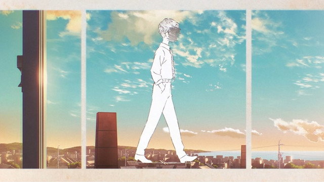

Music
I love music, one of the great thing about music is that it can be used to express all kinds of emotions, from happiness and joy to sadness and anger. My favorite music band is Yorushika, who is a Japanese pop-rock duo founded in 2017. The group is composed of n-buna, the producer and composer, with suis, the main vocalist. The duo's music type is also meaningful, which is often described as melancholic and introspective, and is known for its emotional depth and poetic lyrics.
A <blockquote> tag in html because i need it
Gaming
I spend a lot of time playing video games. There are some games i spent thousands of hours on, such as Arena of Valor, CS:GO and Albion Online. However the more i grow up, i feel like losing interest on them, when i have many things to worry about. Especially as a computer science student, i expected to spend multiple hours a day just for coding.
Here is just a random table because i need it:
| Games | AoV | Albion | CS:GO |
| Hours | 1700 | 1000 | 850 |